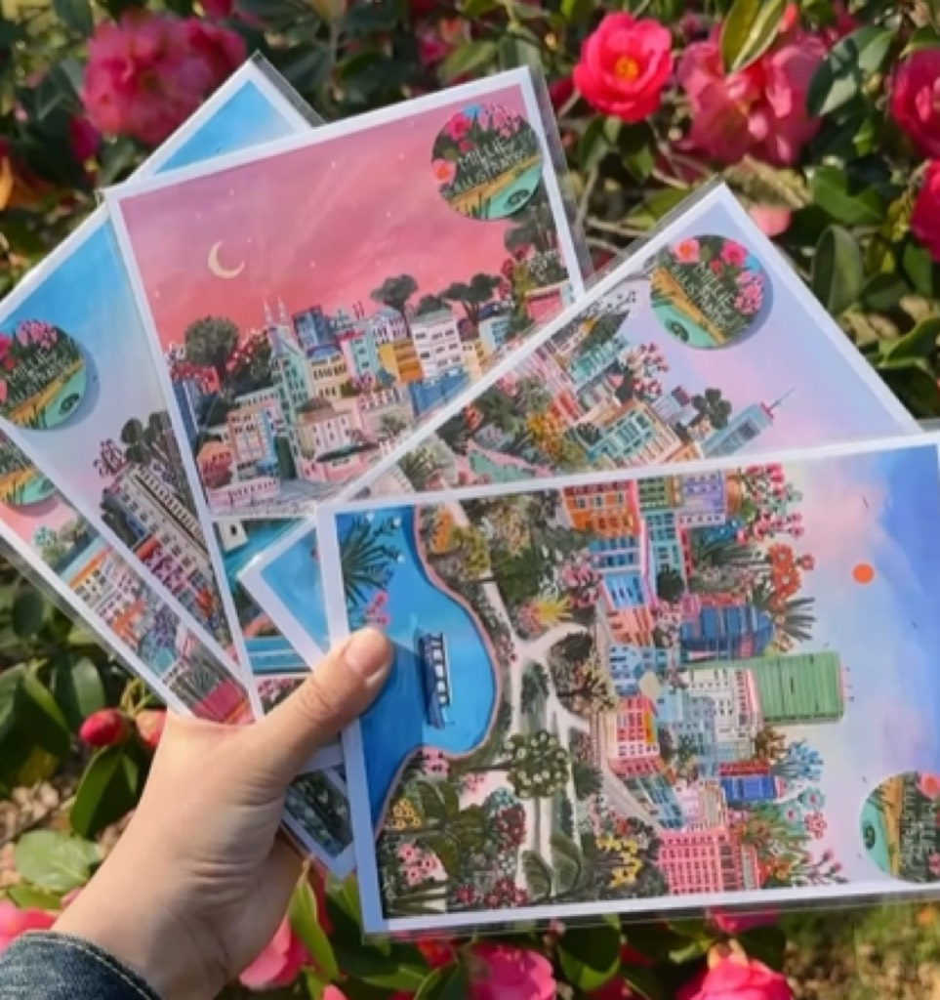
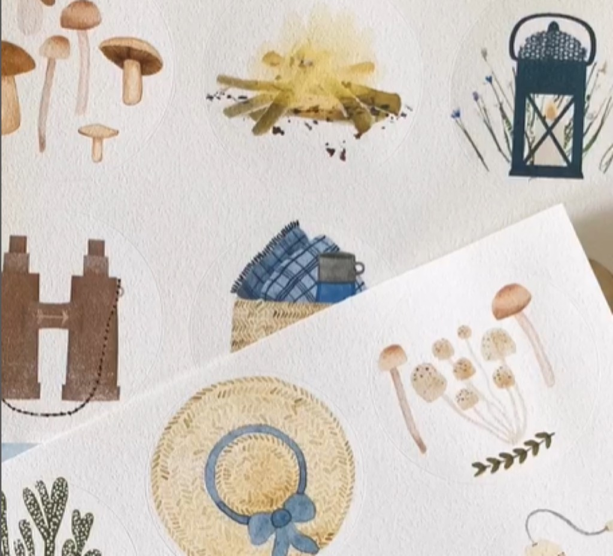

David Regone's series of illustrations capturing the dual nature of New York City in 2024 represents a distinctive artistic response to the perpetual tension that defines urban existence in America's largest and most densely populated metropolis. The project, which juxtaposes images highlighting the city's greatest achievements and most significant challenges within the same year, provides visual documentation of urban contradiction in real time. Regone's approach embraces the fundamental paradox of contemporary New York: a city simultaneously experiencing remarkable cultural vitality and troubling social deterioration, extraordinary architectural achievement and visible decay, incredible opportunity and persistent inequality. This duality isn't unique to New York or to 2024 specifically, yet Regone's artistic articulation of these contradictions at this particular historical moment carries particular resonance and significance. His illustrations function as visual essays, inviting viewers to contemplate urban complexity without demanding resolution or false synthesis.
The concept underlying Regone's series reflects increasing artistic interest in representing contradiction and ambiguity rather than imposing artificial coherence or simplified narratives onto complex social realities. Rather than creating illustrations that celebrate New York's achievements while ignoring its problems, or conversely, creating work that depicts urban decline without acknowledging genuine vitality and progress, Regone insists on holding both truths simultaneously. This refusal of false unity or imposed harmony constitutes the intellectual and ethical core of the project. The illustrations don't resolve the contradictions they present; they embody them, forcing viewers to recognize that authentic representation of complex urban systems requires simultaneous acknowledgment of opposing realities. A single city can manifest extraordinary cultural achievement and deplorable neglect within the same geographic and temporal boundaries, and honest artistic representation must capture this simultaneity.
Regone's visual style employs bold line work, striking color contrasts, and compositional strategies that emphasize juxtaposition and comparison. Rather than attempting photorealistic documentation, his illustrative approach allows for interpretive exaggeration and symbolic representation that enhances conceptual clarity. The illustrations prioritize legibility and communicative force; viewers should immediately grasp the essential ideas being presented, even before engaging with subtle details and technical sophistication. This democratic approach to illustration—privileging clarity and accessibility alongside artistic sophistication—reflects contemporary illustration's expanded ambitions as a medium capable of addressing serious subjects with genuine intellectual depth. Regone's illustrations suggest that serious artistic and conceptual work need not remain confined to elite art world contexts; illustration and fine art occupy a continuum of creative expression, and significant ideas deserve presentation in accessible visual forms.
The specific content of Regone's illustrated comparisons reveal his nuanced observation of New York in 2024. Images of cultural achievement might include concert venues, theater productions, artistic institutions, and the endless diversity of human expression that flourishes in urban environments. Simultaneously, illustrations depicting urban challenges document homelessness, infrastructure deterioration, gentrification's impact on neighborhoods, and various forms of social inequality. The juxtaposition isn't meant to create artificial balance or suggest that positive and negative aspects somehow cancel each other out. Rather, the comparison forces viewers to recognize that both realities exist simultaneously, that they're not mutually exclusive, and that comprehensive understanding of contemporary urban life requires holding both truths. This intellectual sophistication elevates Regone's work beyond simple documentation into the realm of genuine visual philosophy.
David Regone's Background and Artistic Practice: David Regone has established himself as a serious illustrator and visual commentator on contemporary urban and social issues. His work frequently engages with themes of inequality, infrastructure, human experience in dense urban environments, and the complex realities of late capitalist city life. Before developing the specific project documenting New York City's dualities in 2024, Regone had built a substantial body of work exploring similar themes through illustrated essays, commissioned editorial illustrations, and independent creative projects. His education in fine art and illustration provided foundational technical skills, but his artistic development was shaped equally by engagement with contemporary social issues and commitment to using illustration as a medium for serious social commentary.
Regone's career trajectory exemplifies contemporary illustration's evolution toward greater conceptual ambition and social engagement. Rather than limiting his practice to commercial illustration or decorative work, Regone has pursued personal projects addressing substantive social and political themes. His illustrations have appeared in major publications addressing contemporary social issues, and his independent work has gained recognition from audiences and critics who appreciate illustration's potential as a medium for serious artistic and intellectual engagement. The New York City project represents a culmination of these interests: it applies Regone's substantial technical and conceptual capabilities to documenting and artistically interpreting the contradictions defining urban life in a specific place at a specific historical moment.

Regone's position as an artist deeply engaged with urban environments and urban social dynamics proves crucial to understanding the authenticity and impact of his work. He doesn't approach New York as an outsider observing from distant vantage points; rather, his engagement with the city appears rooted in genuine lived experience and meaningful investment in urban life. This insider perspective lends credibility to his artistic interpretations and ensures that his illustrations reflect nuanced understanding of urban complexity rather than simplified external judgments. His work suggests someone who loves New York even while recognizing its serious problems, who sees the city's contradictions as features of urban life requiring artistic attention rather than failures to be rationalized away.
Technique and Visual Language: Regone's illustrative technique emphasizes bold expressionism, striking color choices, and compositional strategies that prioritize clarity and impact. His line work demonstrates confidence and intentionality; the marks constitute deliberate choices rather than tentative explorations. The quality of his drawing reflects extensive training and practice, yet the apparent looseness and expressionistic energy suggest spontaneity and directness. This balance between technical mastery and expressive immediacy characterizes much contemporary illustration at its finest. Viewers simultaneously register sophisticated technical execution and emotional authenticity, responding to both dimensions of the work.
Color functions as a primary communicative tool in Regone's work. His palette choices often carry symbolic and emotional weight. Warm colors might dominate illustrations celebrating urban vitality and achievement, while cooler tones might emphasize images addressing urban problems and social challenges. Yet Regone doesn't employ color symbolically in simplistic ways; his color choices remain complex and sometimes surprising, requiring viewers to remain attentive and open to interpretive possibilities beyond obvious associations. The sophistication of his color work reflects understanding of how color psychology operates while resisting reducing colors to mere symbolic vehicles for predetermined meanings.
Composition plays a critical role in Regone's communicative strategy. When presenting paired illustrations highlighting positive and negative aspects of New York, Regone employs compositional mirroring and strategic contrast to emphasize juxtaposition. The illustrations might mirror each other's basic structure while diverging dramatically in content and emotional tone, or they might employ sequential composition that guides viewers through contrasting urban scenarios. These compositional choices aren't merely formal concerns; they directly serve the conceptual content of the work, using visual organization to reinforce intellectual and emotional messages about urban contradiction and complexity.
Regone frequently incorporates lettering, text, and symbolic elements into his illustrations, creating work that operates across the boundary between pure illustration and graphic design. This hybrid approach allows him to include conceptual information and contextual details that enhance interpretive possibilities. Text elements might provide statistics, place names, or thematic framing that contextualizes the illustrated content. Symbolic elements and visual metaphors appear throughout his work, requiring viewers to engage in interpretation and meaning-making rather than passively consuming predetermined content. This demand for active interpretation respects viewer intelligence and creates opportunities for diverse readings and personal responses to the work.
Cultural Significance and Social Commentary: Regone's New York City project occupies important cultural and artistic territory in contemporary visual culture. At a moment when political polarization encourages simplified narratives and false dichotomies, artistic work insisting on ambiguity and contradiction performs essential cultural labor. Regone refuses the impulse toward simplification; he doesn't allow viewers to retreat into comfortable positions acknowledging only the aspects of urban reality they prefer to recognize. His illustrations function as visual arguments for complexity, sophistication, and honest engagement with social reality in all its contradictions.

The project speaks to broader contemporary anxieties about urban decline and the viability of American cities. New York City's particular status—simultaneously the capital of global culture and finance and a city struggling with severe social problems including homelessness, crime, and infrastructure deterioration—makes it an ideal subject for investigating urban contradiction. Regone's artistic attention to these dynamics at a specific historical moment (2024) creates valuable documentation of contemporary urban conditions. Future historians and social scientists will find in his illustrations important visual record of how urban life appeared and how educated observers understood urban contradictions during this period.
Regone's work also engages with questions of artistic responsibility and social engagement. By creating illustrations addressing serious urban social issues, Regone participates in broader conversations about art's role in society and whether serious artists should address political and social themes. His work rejects the notion that artistic seriousness requires withdrawal from social engagement or confinement to purely formal or aesthetic concerns. Instead, Regone demonstrates that serious artistic achievement and meaningful social engagement can coexist, that addressing important social themes need not compromise artistic quality or intellectual depth, and that illustrators and visual artists have important roles to play in contemporary cultural conversations.
Inspiration and Creative Process: Regone has indicated that the project emerged from ongoing observation and documentation of New York during 2024, a year that brought significant challenges and significant achievements to the city. Political developments, economic conditions, cultural events, infrastructure crises, and social movements all contributed to the year's distinctive character. Regone's creative process involved selecting specific moments, developments, and phenomena that seemed emblematic of the year's contradictions, then translating these observations into illustrated form. The process required both close observation and interpretive judgment—deciding which elements best represented larger systems and patterns rather than merely documenting random occurrences.
The juxtaposition framework emerged gradually as Regone worked through his observations and material. Rather than creating a straightforward chronological documentation of 2024, the pairing structure allowed him to create visual arguments about the simultaneity of contradictory urban realities. This conceptual framework elevated the project beyond mere documentation into meaningful artistic and intellectual statement. Regone's working process likely involved extensive sketching, compositional studies, and revision as he refined his visual language and ensured that each illustration functioned both as independent artwork and as component of a larger conceptual project.
Where to Discover Regone's Work: Regone's illustrations appear regularly on his social media accounts, including Instagram, where he shares both completed work and work-in-progress images revealing his creative process. His professional website functions as comprehensive portfolio showcasing his complete body of work, organized by project and including information about commissions and licensing. Major design and illustration publications frequently feature his work, particularly those addressing contemporary urban issues and social commentary. The specific New York City project may be available through galleries, design publications, or via his direct platforms. Following Regone's work across these various venues provides insight into his ongoing artistic practice and evolving engagement with contemporary urban and social themes.
Conclusion: David Regone's illustrated examination of New York City's contradictions in 2024 represents important contemporary art making—work that addresses significant themes with intellectual honesty and artistic sophistication. By refusing simplification and insisting on holding contradictory truths simultaneously, Regone models how serious artists might engage with complex social realities. His illustrations demonstrate that illustration, far from being limited to decorative or commercial functions, constitutes a powerful medium for artistic expression, social commentary, and meaningful engagement with important themes. Regone's work invites viewers into more nuanced, sophisticated thinking about urban life, social complexity, and the contradictions defining contemporary existence. In an era of polarization and simplified narratives, such invitations to complexity and intellectual honesty constitute valuable contributions to contemporary culture.